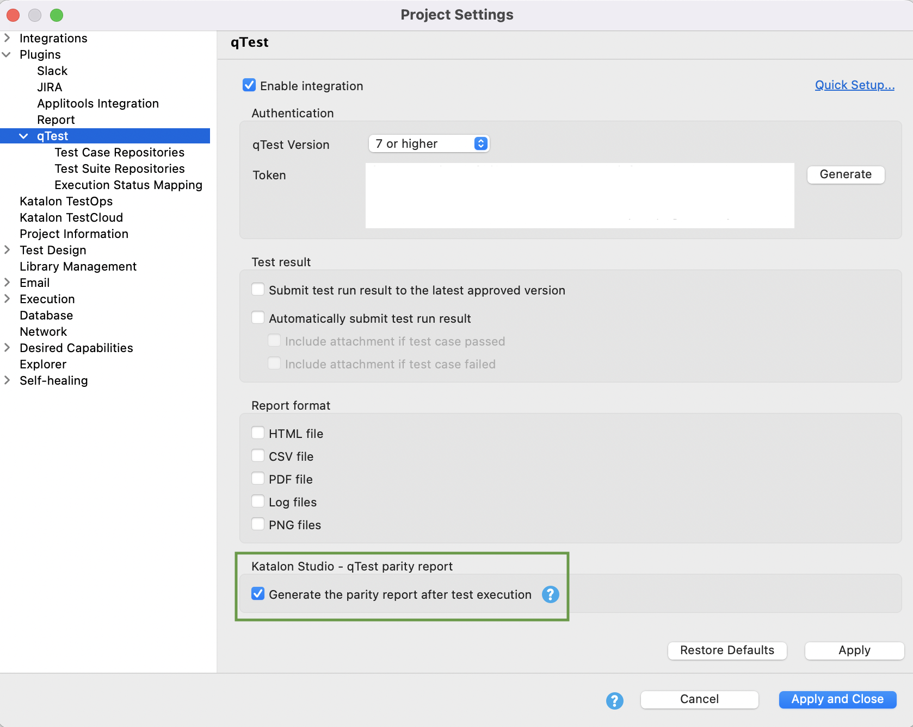

Generate qTest - Katalon Studio parity reports
-
Katalon Studio version 7.8.0 onwards.
-
qTest integration with Katalon Studio already configured. See: Configure qTest integration in Katalon Studio.
- Go to Project Settings > Plugins > qTest, check the Generate the parity report after test execution box.Katalon Studio will generate test suite and test suite collection reports when you turn on this setting. This parity report provides a quick check of the version and test step contents of your integrated test cases between two systems.
- To view the generated parity report, open the
<your-project-folder>/Reportsfolder.